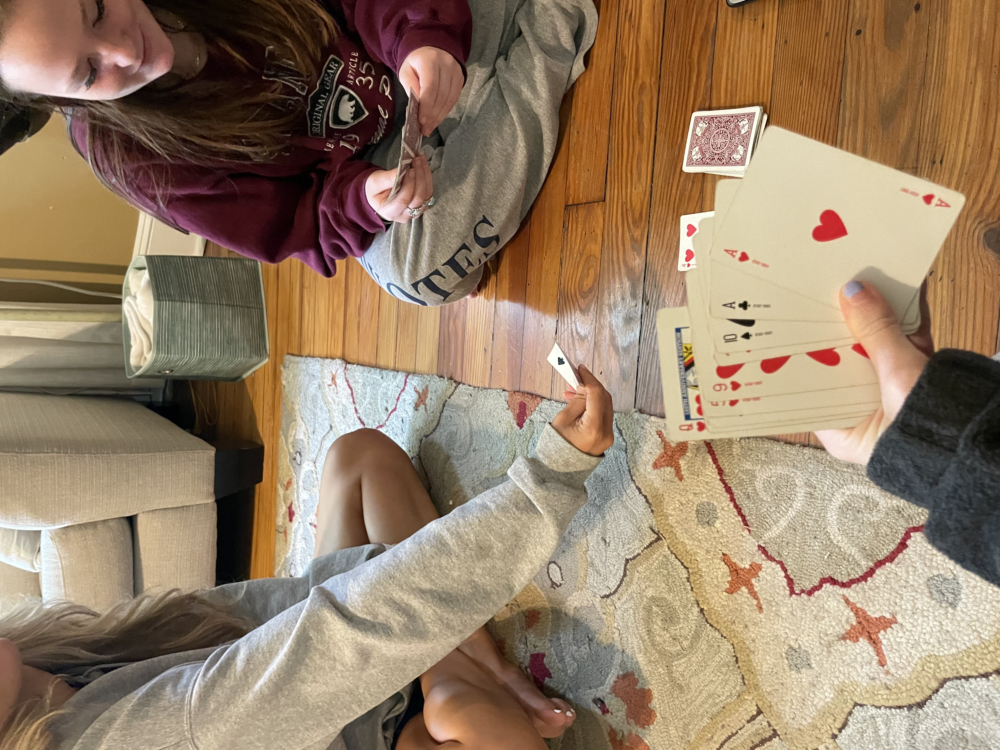
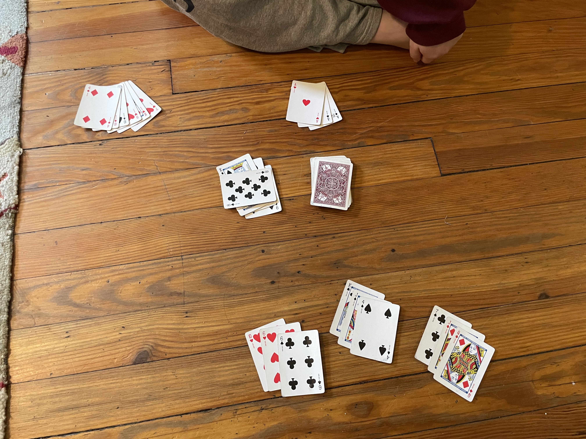
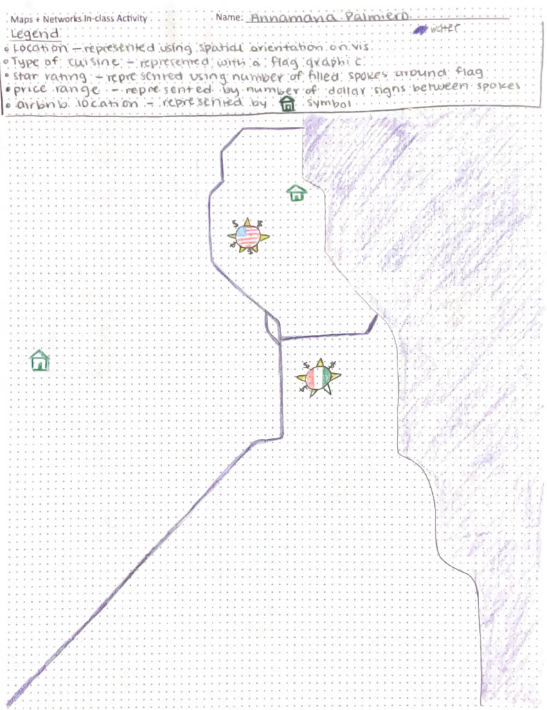
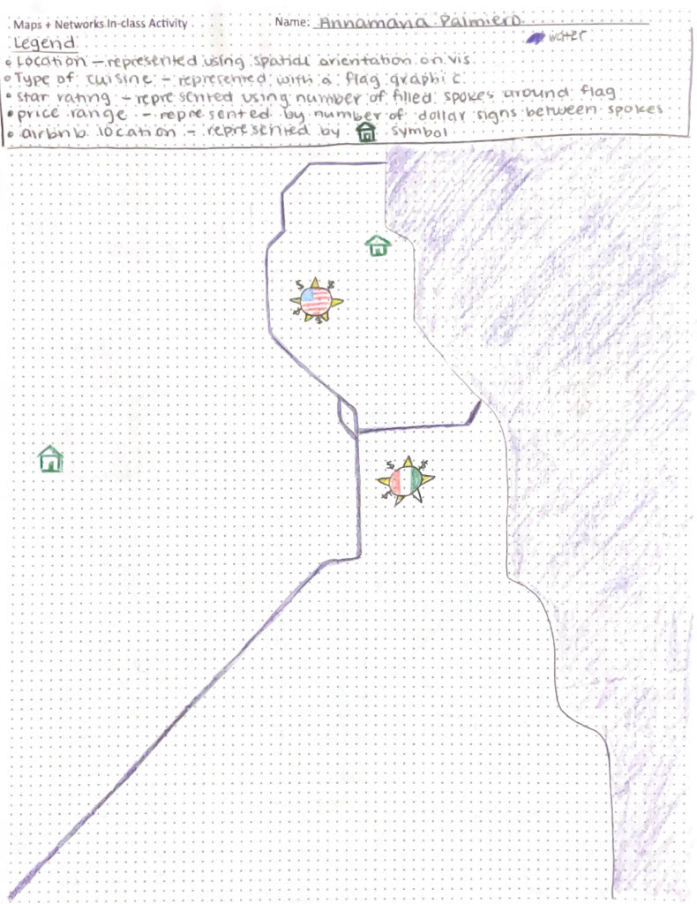

The intent of the following portfolio is to showcase my growth and increased understanding of data visualization throughout the Spring 2025 semester. Additionally, I wanted an opportunity to explore coding in HTML and CSS, as I have not coded in either language before!
☆ To achieve these goals, I will Refine + Reflect on two artifacts:
(1) Dear Data Postcard
(2) Original Card Game called Deliverable Dash
☆ I will Curate + Reflect on two separate artifacts:
(1) Maps and Networks in-class activity
(2) Curate a guideline for Dashboard Best Practices
☆ I will present the above material in a webpage designed in HTML and CSS
My intent for choosing these specific artifacts were to demonstrate that data visualization can be creative, showcase work I am proud of, and reflect on my group's Final Release.
Dear Data Postcard
Reflection
This artifact is one I created for the purpose of the Final Portfolio. I chose to create a postcard inspired by the original Dear Data postcards because I appreciated the opportunity to delve deeper into artistic visualizations. Something I tend to find frustrating with technology is not being able to get it to do exactly what I envision. In this situation, I never know whether this limitation is due to the software itself, or my knowledge of it. However, making a postcard meant designing something by hand, so I knew the limitations of my own creative abilities from the start. This made creating this artifact enjoyable, and calming! Additionally, the design process was completely different from the other visualizations I created this semester. When looking at postcards from the original Dear Data creators, you may not be able to tell that some designs encode data at all. They were beautiful, and some were very artistic. So, for just a moment, I concerned myself with form just as much as function (bad, I know).
To complete this assignment, I used a software called GoodNotes, and recorded the data I encoded in Google Docs. GoodNotes is typically used for notetaking, but can also be used for drawing and low level digital design. This was my first experience using digital design for a school project. The program did an adequate job supporting my creation of the Dear Data Postcard, and I was pleasantly surprised. I was able to clone already created drawings, which helped eliminate any fear I had about my final product being imperfect.
I chose to encode the data of which drinks I consumed over the course of a week. I chose this data because I thought it would be fun to visualize, and I was curious to see how much I spent on drinks over the course of one week. I was surprised to find that I drank 20 drinks in a week! This is a lot more than I expected, and I think it is a good reminder to be mindful of my caffeine consumption, and spending.
Relevant Artifact Photos
Card Game
Club Scrum
Club Scrum is a card game that can be played with a standard American 52 card deck. You are a Data Analyst for a large corporate company, and are working on a big presentation. Your goal is to match Mark and Channel cards to Task cards. Each successful match increases or decreases a player's point total. Like in real data visualization, some Mark and Channel combinations are more effective than others. Therefore, some combinations can earn a player more points than others. There are also bonus cards, called "Contractor Cards" that can substitute in for any missing Mark or Channel card, and help you finish your deliverable! This game was designed to recognize the realities of corporate Sprint culture, while still being simple and fun.
Rules
→ Hearts are Marks
→ Diamonds are Channels
→ Clubs are Tasks
→ Spades are Contractor Cards
1. Remove any Joker cards from your deck
2. Shuffle the deck well, and deal each player 9 cards
3. Take one card from the top of the deck, and place it face up to make the Discard Pile
4. Place the remaining cards in a pile face down, this will be the Draw Pile
→ The player to the left of the dealer goes first. If there are only two players, the player who was not the dealer starts the game.
→ At the start of your turn, you can do one of two things:
1. Draw a card from the top of the draw pile.
☆ If you draw a card from the top of the Draw Pile, you can play it immediately, or save it for later.
2. Take a card from the top of the Discard Pile.
☆ If a card is taken from the Discard Pile, it must immediately result in a match.
→ After choosing one of these two options, the player is now free to create matches. A match is made when a player has one Mark (Heart) and one Channel (Diamond) card that can be matched to a Task (Club) card.
→ Once a player has finished making matches, or passes the opportunity to make a match, one card must be discarded from their hand and placed to the top of the Discard Pile.
→ The round continues until one player has no cards left in their hand. Once this happens, each player tallies the points from their created matches. Then, players with cards remaining in their hand create any matches possible from their in hand cards. Final points from each round are calculated by subtracting the points from in-hand matches from the points of played matches.
For example, if a player has 10 points from created matches, and 3 ♥ + 4 ♠ + 8 ♣ in their hand, they would subtract 3 points from their total (since the score of this match is 3 points). This player would end the round with 7 points. If there are no clubs in a players hand at the end of the round, no matches can be made, and 0 points are subtracted from the created match point amount.
→ The game ends when one player reaches 36 points, a nod to our class number, CMSC436! Multiple rounds can be played to reach a total of 36 points overall.
A
→ Basic Match: 5 ♥ + 7 ♦ + J ♣ (1 + 1 + 5 = 7 point match)
A
→ Calling the Contractor Match: 3 ♥ + 4 ♠ + 8 ♣ (1 - 1 + 3 = 3 point match) OR 3 ♠ + Q ♠ + 8 ♣ (-1 -2 + 3 = 0 point match)
A
→ Perfect Match: 5 ♥ + 5 ♦ + 5 ♣ (1 + 1 + 3 = 5 point match + 2 perfect match bonus = 7 points total) AND player says: "One way to effectively show trends over time is to use the Line Mark, with the Position Channel, and the Line Chart Idiom." (earns 3 additional points).
A
→ Benevolent Contractor Match: 5 ♥ + 5 ♠ + 5 ♣ (1 - 1 + 3 = 3 point match + 2 perfect match bonus = 5 points total) OR J ♠ + J ♦ + J ♣ (-2 + 2 + 5 = 5 point match + 2 perfect match bonus = 7 points total)
| Suit | Face Value | Point Value Towards Match |
|---|---|---|
| Clubs | Face-Cards | +5 Points |
| Clubs | Non Face-Cards | +3 Points |
| Spades | Face-Cards | -2 Points |
| Spades | Non Face-Cards | -1 Point |
| Hearts and Diamonds | Face-Cards | 2 Points |
| Hearts and Diamonds | Non Face-Cards | 1 Point |
| Perfect Match Bonus | Perfect Match Bonus | 2 Points |
Reflection
Relevant Artifact Photos
In order to test out this game, I played a few different versions of it with my roommates! They have never been introduced to Data Visualization and do not study computer science or math related fields, but they were still able to follow along and play the game. Because this game does not require much technical knowledge, it can be a good way to connect new programmers to Data Visualization concepts. Below are two images, the first of my roommates and I starting our first game of Club Scrum, and the second of our ending matches after a few warm-up rounds.
 Maps & Networks Activity
Reflection
Looking through my classwork over the past semester, I was most proud of this assignment. This is due in part to the fact that this assignment seemed like a puzzle. My solution to this “puzzle” was a bit odd, and definitely not perfect. But, the beauty of this assignment was that no two individuals at my table, or even in the classroom likely had the same solution, as there was no right or wrong way to represent the given data, or complete the given tasks.
By completing this assignment, I learned that past fundamental suggestions, data visualization is truly subjective to the creator. For example, it is advised that when you have geospatial data, you should visualize it using a map. However, past the suggestion of having a map, many of the vis design choices that follow are dataset and creator dependent. A creator may follow bad, good, or neutral practices. Their vis may make perfect sense, have good aesthetics, and accurately represent the data. Alternatively, they may choose confusing glyphs, misleading color scales, or use nonsensical dual axes.
Coming up with effective glyphs is a skillset I hope to continue building on as I continue my data visualization journey. I consistently found myself impressed with in-class examples containing glyphs that genuinely did a great job of portraying data. That being said, in certain cases, I feel glyphs can feel unprofessional, or too “maximalist” for a dry corporate environment. However, I think there is a balance between function and form to be found when using glyphs, as shown in class examples. I hope to continue working towards finding this balance in my future visualizations that include glyphs! (I’m not quite there yet though… don't think stars are acceptable in corporate)
Relevant Artifact Photos
 
 Best Practices: Dashboard Edition
Reflection
Relevant Artifact Photos